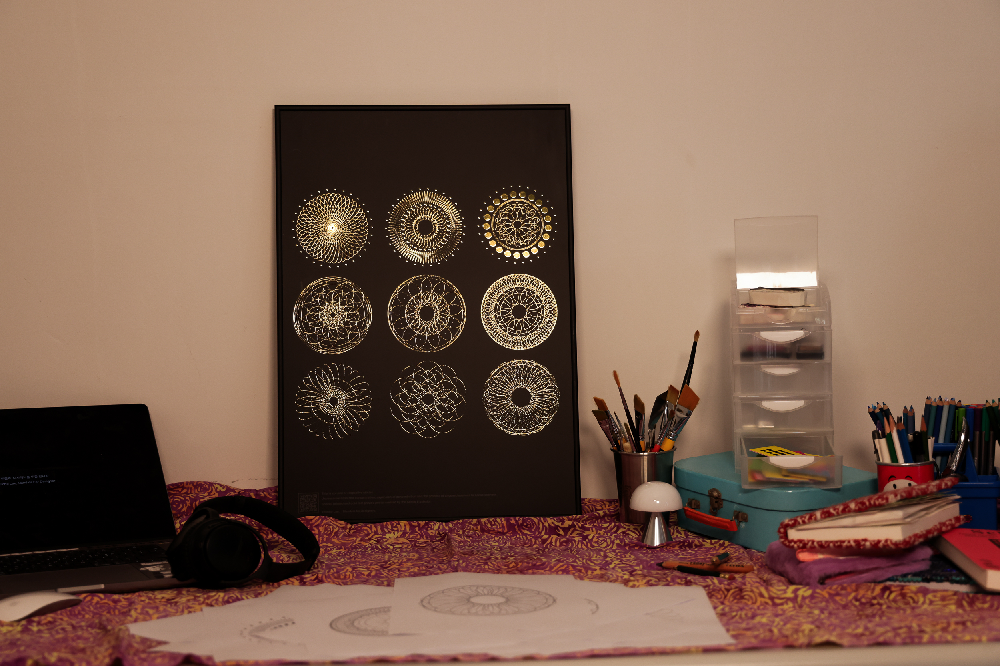
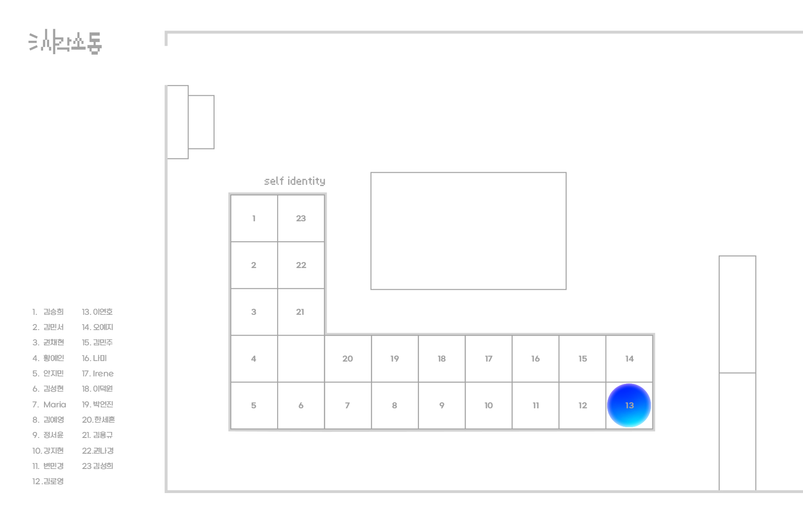

MAPPING YOUR TIME
VD1
침대에 누우면 하루의 일들이 역재생 된다. 어떠한 기억들은 편집되기도 하고, 그 기억들이 섞이면 다른 기억으로 남기도 한다.
SHAPE POSTER
VD1

원형을 통하여 만다라를 만든다. 디자이너들은 책상에서 많은 고민들을 하며 생각에 잠기기도 하는데, 바로 눈 앞에 있는 <디자이너를 위한 만다라> 포스터를 바라보며 마음을 가다듬어 보자. 하단에는 명상을 도와주는 큐알코드가 있다.
BOUND BOOK OF SCRAPS
VD1
길에 떨어져있는 불법대출 전단명함은 왜 이렇게 눈에 잘 띄는걸까? 그리고 왜이리 보기 불편한 디자인일까? 그래픽과 색감의 연관성을 재편집하여 나란히 나열해본다.
MINIMALISM POSTER
VD1
토마토의 아웃라인을 통한 그래픽과, 효능을 알리는 "일단 잡솨봐." 너무나도 많은 토마토의 효능을 함축하고 있는 한 마디.
MAXIMALISM POSTER
VD1
토마토의 효능을 그래픽 위에 복잡하게 설명한다. 이걸 읽는 사람이 있을지는 의문점이다.
EXHIBITION IDENTITY
VD2
시각소동을 주제로 구슬을 굴려 잉크로 만든 그래픽을 재편집 하여 메인포스터를 제작하였다.
SELF IDENTITY
VD2
이 위치로 직접 가서 확인해보세요!
